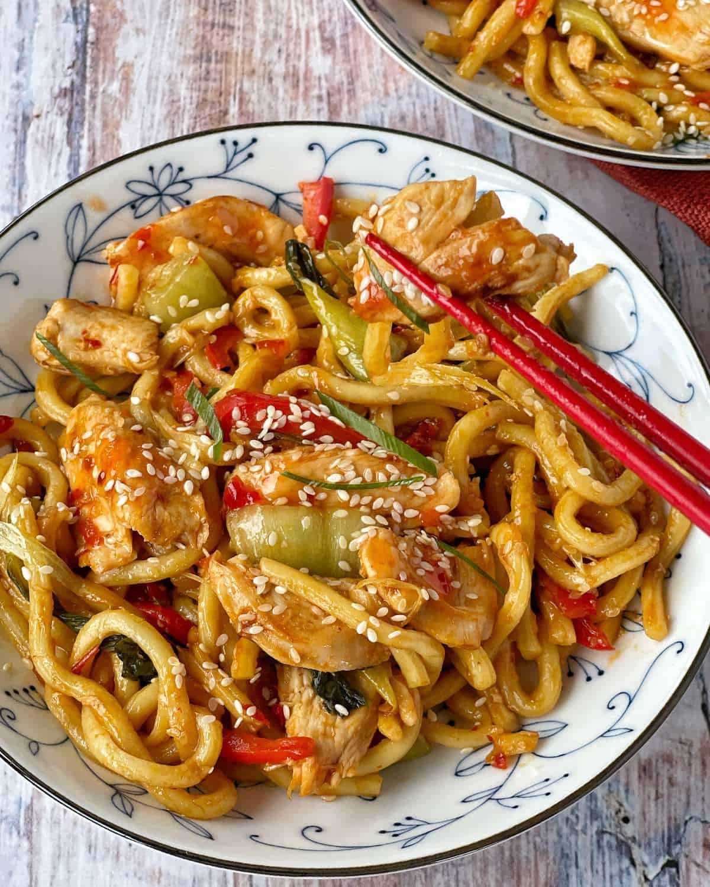

Chicken and Rice

A delicious savory meal packed full with flavour, veggies and protein. Just follow these easy steps to make yourself this scrumptious meal.
Ingredients:
- 250g of chicken - one chicken breast
- One packet of uncooked noodles
Steps:
- Pour 400ml of water in to a large saucepan and bring to the boil
- Add noodles to saucepan and cook until they bendy and soft
- Fry chicken in a pan until golden brown and cooked all the way through
- Add cooked noodles to pan with chicken and fry till crispy
- Serve chicken and nodles in a bowl and enjoy!